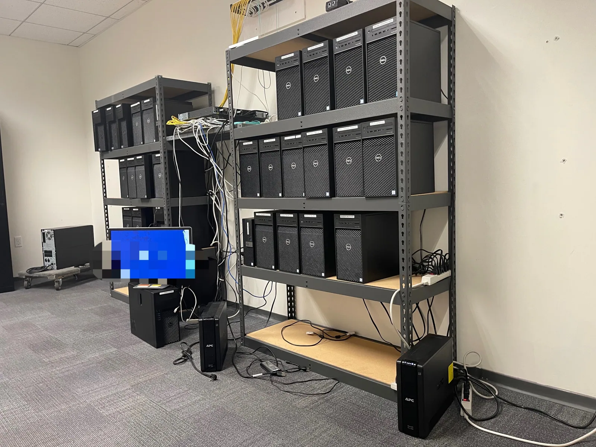
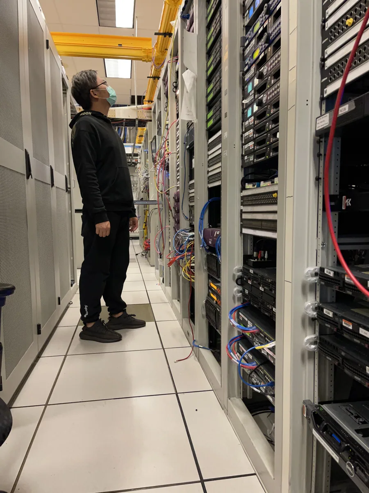
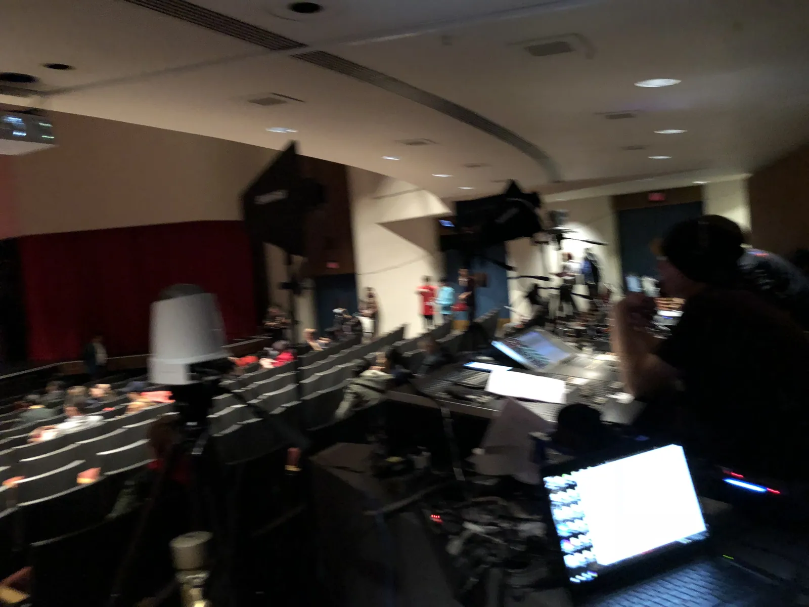
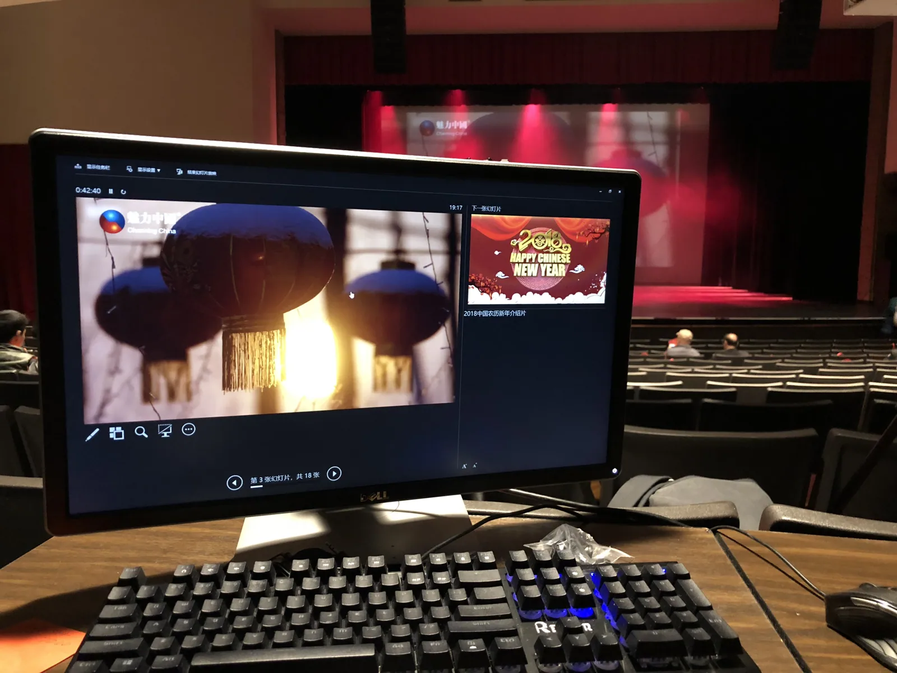
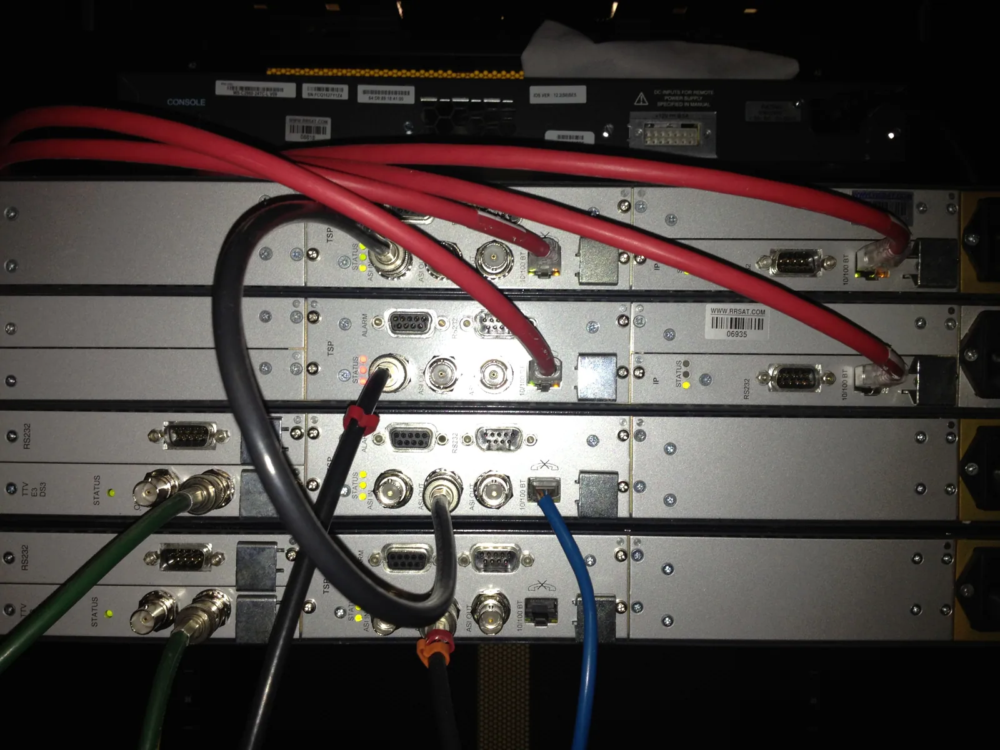
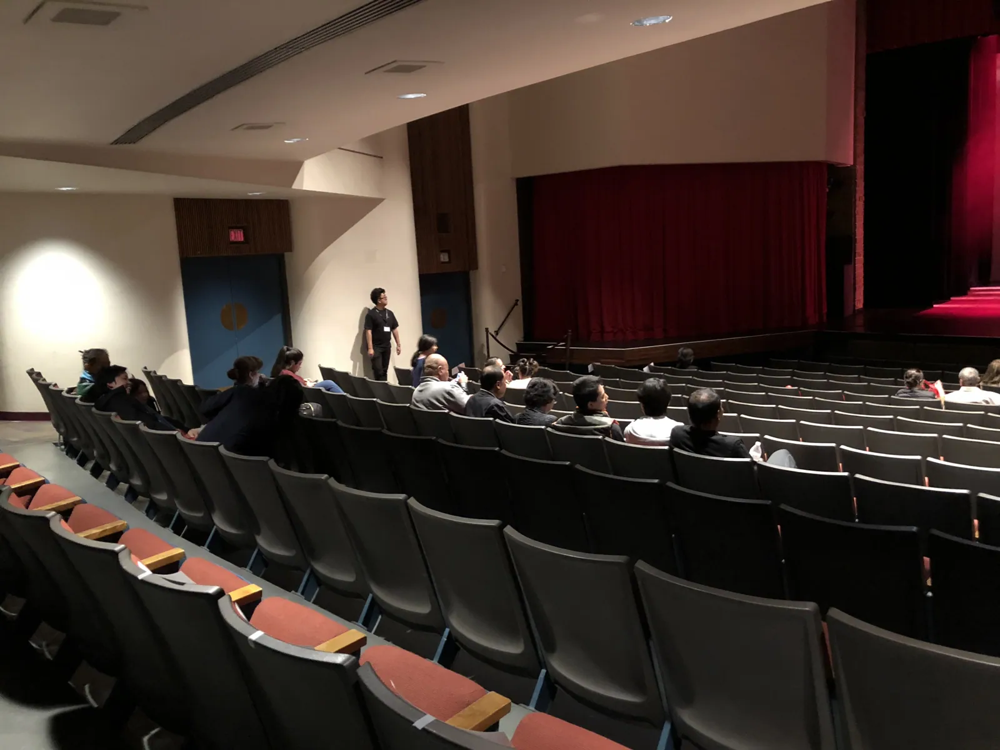

Infrastructure & Equipment
Hands-on equipment environments and systems organization.
A curated collection of authentic technical-environment photographs from past work. Images illustrate experience; organizations shown are not presented as current clients or endorsements.

Hands-on equipment environments and systems organization.

A look at work in enterprise equipment spaces.

Technical equipment supporting a live presentation environment.

Presentation monitoring and event control equipment.

Close-up of interconnected professional system equipment.

Conference-room production and technical preparation.
Project photographs provided by the site owner. Descriptions are general and do not claim individual customer contracts.
Tell me about your environment, challenge, or upcoming project.